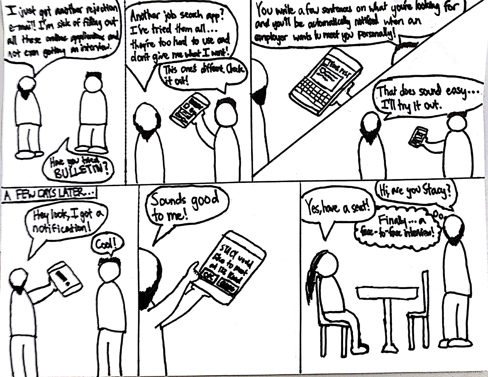

Project Background
For quarter-long project class COGS 120, paired up with two other people to create an online mobile application for users of 40+ age
Our project theme was to create a mobile web application that would apply for users over the age of 40.
We were allowed to choose our own groups of three so I formed a team consisting of myself, a HCI Design major, Vanessa, an International Business major, and Andy, a Computer Science major.
Team and your Role
The team consisted of three people with different roles.
-
Marketing Analyst: Being an International Business major, Vanessa was used to running surveys for her business classes. Her skills allowed us to collect more data outside of classtime and gave us more insight to human needs.
-
Computer Science/Software Engineer: Andy was the most familiar with programming out of all of us. He helped with the trickier portions of the complex code. There was some backend functionality that he implemented, saving the group massive headache and anxiety.
- UX Designer (me): I had taken some design classes prior that gave me experience with the design process. This was my first design project-based course though so there was much to learn. I worked on the workflows and paper prototypes. I also put in effort to really think about the design problem and what solution we could try.
The Work
The class was like a sampler dish of the entire design process. We explored most of the aspects but did not cover them in depth.
Our interview process involved two older women who were spending time outside of the Trader Joe’s. We wanted to know more about their lives and asked them what they did in their spare time in hopes of understanding more on any daily problems they faced.
While conversing on their hobbies, the women both exclaimed how tiring hobbies were and how they found a greater need in different fulfillment. They talked about job-hunting and the struggles especially with the recent boom and integration of technology. They did not keep up to speed and felt most job sites were either biased against age or did not have proper functionality to find pink-collar jobs, work they could do.
We used the insights from interviews and came up with a concept for a mobile web-app that would allow older people to find jobs through a simplified process. Our storyboards show the goal was to strip away the extraneous features that sites, such as LinkedIn, had and keep the functionality minimal for our users.
We created some paper prototypes to show basic skeleton frame of our UIs and went to flesh them out into wireframes and eventually code. We spent the next few weeks iterating on our web-app and gaining further feedback from our peers in discussion on improving the product by asking our peers to evaluate our apps and give their feedback.


In the end, we had developped a functional website that would allow users with UX to help guide an easier experience through the opportunity finding process.
We were given about a week to find as many people to use our product for our user testing stage. Given that we could not interview a lot of people within a small amount of time, the professor allowed us to test with people outside our design challenge.
Our interview process involved two older women who were spending time outside of the Trader Joe’s. We wanted to know more about their lives and asked them what they did in their spare time in hopes of understanding more on any daily problems they faced.
While conversing on their hobbies, the women both exclaimed how tiring hobbies were and how they found a greater need in different fulfillment. They talked about job-hunting and the struggles especially with the recent boom and integration of technology. They did not keep up to speed and felt most job sites were either biased against age or did not have proper functionality to find pink-collar jobs, work they could do.
We used the insights from interviews and came up with a concept for a mobile web-app that would allow older people to find jobs through a simplified process. Our storyboards show the goal was to strip away the extraneous features that sites, such as LinkedIn, had and keep the functionality minimal for our users.


We created some paper prototypes to show basic skeleton frame of our UIs and went to flesh them out into wireframes and eventually code. We spent the next few weeks iterating on our web-app and gaining further feedback from our peers in discussion on improving the product by asking our peers to evaluate our apps and give their feedback.
In the end, we had developped a functional website that would allow users with UX to help guide an easier experience through the opportunity finding process.
We were given about a week to find as many people to use our product for our user testing stage. Given that we could not interview a lot of people within a small amount of time, the professor allowed us to test with people outside our design challenge.
Success Metrics
We did not get to test our web-app in the real world given the time constrictions of the due date. However, we did get to showcase our project to the class during a demo session. Our TA was very supportive of the idea and gave enthusiastic feedback. Our team got an A+ on the project.What I Would Have Done Differently
If I could go back to the project with the insight I have learned, I would have done more testing with user experience.Given the brevity of the quarter system, there was not as much time as my group wanted to test the app properly.
Though the professor did not require us to test with real users (given the restriction of time and resources), I would have wanted a chance to see how someone who actually had a need would use it. It would have been a better learning experience for us and that was one aspect of user experience design I felt that I had missed out on in the project.